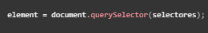
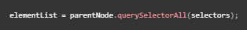

HTML adaptativo.
Erick Daniel Galaviz Saenz
Mat.238545
Queries

QuerieSelector()
Devuelve el primer elemento del documento (utilizando un recorrido primero en profundidad
pre ordenado de los nodos del documento) que coincida con el grupo especificado de
selectores.

QuerieSelectorAll()
El método querySelectorAll() de un Element devuelve una NodeList estática (no viva) que
representa una lista de elementos del documento que coinciden con el grupo de selectores
indicados.